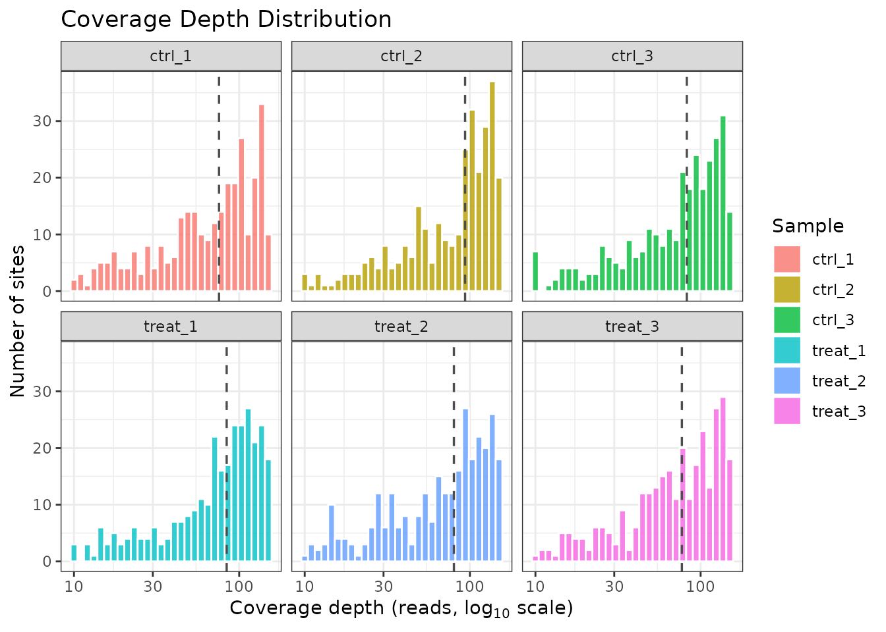
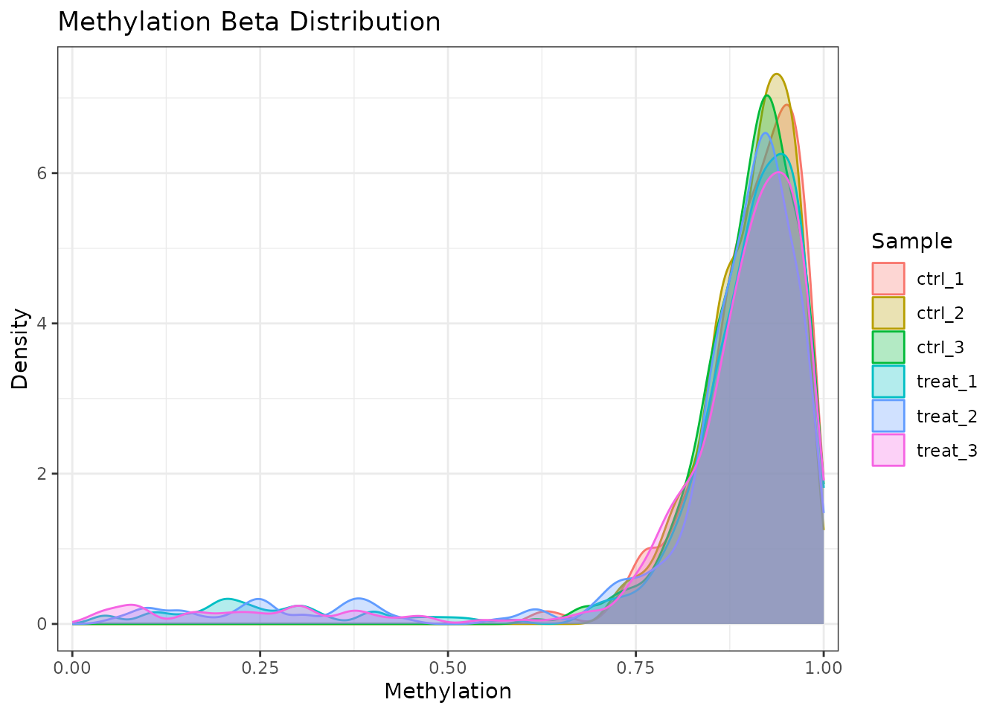
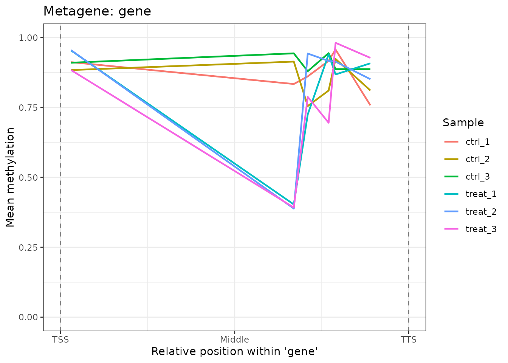
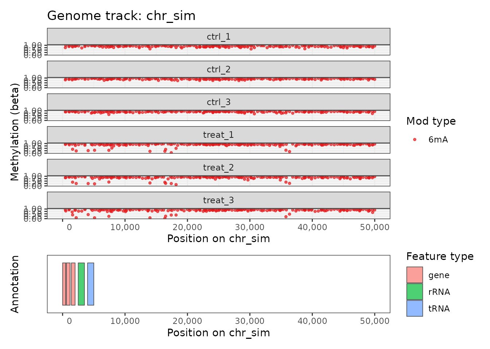
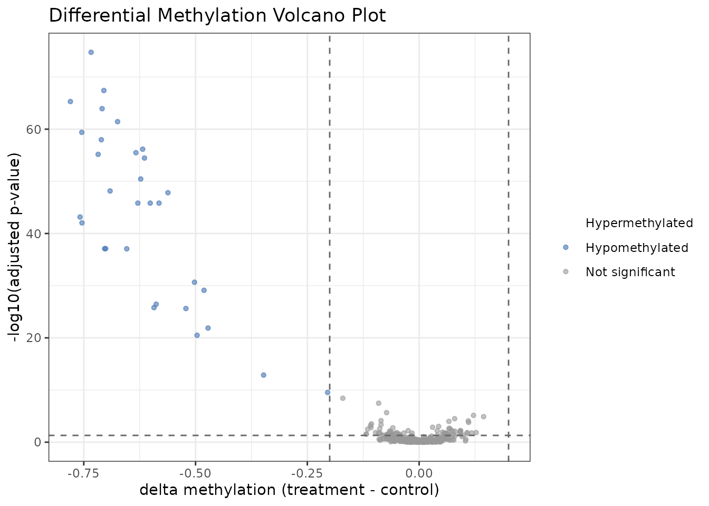
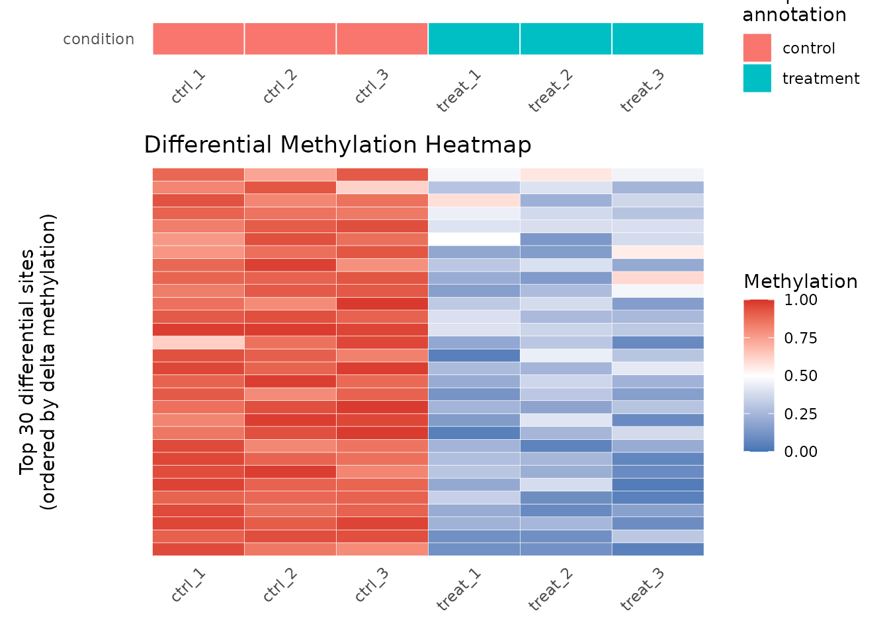

Introduction
comma (Comparative
Methylomics for Microbial
Analysis) is an R package for genome-wide analysis of
bacterial DNA methylation from Oxford Nanopore sequencing data. It
supports three modification types — N6-methyladenine (6mA),
5-methylcytosine (5mC), and N4-methylcytosine (4mC) — in a single,
unified data container. This vignette walks through the complete
analysis workflow using the built-in comma_example_data
synthetic dataset.
The typical comma workflow has five steps:
-
Load per-sample methylation files into a
commaDataobject. - QC the data (coverage, beta distributions, PCA).
- Annotate sites relative to genomic features.
- Test for differential methylation between conditions.
- Visualize the results.
Installation
if (!requireNamespace("BiocManager", quietly = TRUE))
install.packages("BiocManager")
BiocManager::install("comma")The commaData Object
commaData extends SummarizedExperiment and
is the central data container in comma. It stores:
- methylation — a sites × samples matrix of beta values (0–1).
- coverage — a sites × samples matrix of read depths.
- rowData — per-site metadata: chromosome, position, strand, mod_type.
- colData — per-sample metadata: sample_name, condition, replicate.
- genomeInfo — chromosome names and lengths.
-
annotation — genomic features as a
GRangesobject. -
motifSites — motif instances as a
GRangesobject.
The built-in comma_example_data contains 300 synthetic
methylation sites (200 × 6mA, 100 × 5mC) on a simulated 100 kb
chromosome across three samples: two controls (ctrl_1,
ctrl_2) and one treatment (treat_1).
data(comma_example_data)
comma_example_data
#> class: commaData
#> sites: 300 | samples: 6
#> mod types: 5mC, 6mA
#> motifs: CCWGG, GATC
#> mod contexts: 5mC_CCWGG, 6mA_GATC
#> conditions: control, treatment
#> genome: 1 chromosome (100,000 bp total)
#> annotation: 5 features
#> motif sites: none
# Modification types present
modTypes(comma_example_data)
#> [1] "5mC" "6mA"
# Per-sample metadata
sampleInfo(comma_example_data)
#> sample_name condition replicate caller
#> ctrl_1 ctrl_1 control 1 modkit
#> ctrl_2 ctrl_2 control 2 modkit
#> ctrl_3 ctrl_3 control 3 modkit
#> treat_1 treat_1 treatment 1 modkit
#> treat_2 treat_2 treatment 2 modkit
#> treat_3 treat_3 treatment 3 modkit
# Matrix dimensions: sites × samples
dim(methylation(comma_example_data))
#> [1] 300 6Exploring the Methylome
Summary Statistics
methylomeSummary() returns a tidy data frame with
per-sample distribution statistics:
ms <- methylomeSummary(comma_example_data)
ms[, c("sample_name", "condition", "mean_beta", "median_beta", "n_covered")]
#> sample_name condition mean_beta median_beta n_covered
#> 1 ctrl_1 control 0.8678843 0.8881436 300
#> 2 ctrl_2 control 0.8728354 0.8951648 300
#> 3 ctrl_3 control 0.8781476 0.8966108 300
#> 4 treat_1 treatment 0.8135452 0.8829561 300
#> 5 treat_2 treatment 0.8136529 0.8867238 300
#> 6 treat_3 treatment 0.8004998 0.8694701 300Coverage QC
plot_coverage() shows the distribution of sequencing
depth per site, per sample. Consistent coverage across samples is an
important quality indicator.
plot_coverage(comma_example_data)
Coverage depth distribution per sample.
Beta Value Distributions
plot_methylation_distribution() plots the density of
methylation levels for each sample. Bacterial genomes often show a
bimodal distribution (sites are either fully methylated or
unmethylated).
plot_methylation_distribution(comma_example_data)
Methylation beta value density per sample, faceted by modification type.
Restrict to a single modification type:
plot_methylation_distribution(comma_example_data, mod_type = "6mA")
Beta value density for 6mA sites only.
PCA for Sample-Level QC
plot_pca() performs PCA on per-sample methylation
profiles. Samples from the same condition should cluster together.
Internally, beta values are converted to M-values via
mValues() before PCA, which stabilizes variance across
sites near 0 or 1.
plot_pca(comma_example_data, color_by = "condition")
PCA of methylation profiles colored by condition.
To retrieve the underlying scores for custom plotting, use
return_data = TRUE. The result is a data.frame
with PC1, PC2, and all sample metadata
columns; the percentage of variance explained by each PC is stored in
attr(result, "percentVar").
Annotating Sites
annotateSites() maps methylation sites to genomic
features using three modes:
-
"overlap"— which features overlap each site. -
"proximity"— the nearest feature to each site. -
"metagene"— normalized position within features (TSS = 0, TTS = 1).
annotated <- annotateSites(comma_example_data, type = "overlap")
si <- siteInfo(annotated)
# Proportion of sites overlapping at least one annotated feature
mean(lengths(si$feature_names) > 0)
#> [1] 0.02333333plot_metagene() visualizes the average methylation
profile across gene bodies:
plot_metagene(comma_example_data, feature = "gene")
Mean methylation profile across gene bodies (TSS to TTS).
Genome Track Visualization
plot_genome_track() produces a genome browser–style plot
of methylation along a chromosome region:
plot_genome_track(comma_example_data, chromosome = "chr_sim",
start = 1L, end = 50000L, mod_type = "6mA")
Genome track for the first 50 kb of chr_sim.
Differential Methylation
diffMethyl() tests each site for differential
methylation between conditions. It is modeled on DESeq2’s workflow: pass
a commaData object and a design formula, and receive back
the same object with statistical results in rowData.
cd_dm <- diffMethyl(comma_example_data, formula = ~ condition,
mod_type = "6mA")
cd_dm
#> class: commaData
#> sites: 300 | samples: 6
#> mod types: 5mC, 6mA
#> motifs: CCWGG, GATC
#> mod contexts: 5mC_CCWGG, 6mA_GATC
#> conditions: control, treatment
#> genome: 1 chromosome (100,000 bp total)
#> annotation: 5 features
#> motif sites: noneExtract the results as a tidy data frame:
res <- results(cd_dm)
# Top sites by adjusted p-value
head(res[order(res$dm_padj),
c("chrom", "position", "mod_type", "dm_delta_beta", "dm_padj")])
#> chrom position mod_type dm_delta_beta dm_padj
#> chr_sim:8907:-:6mA:GATC chr_sim 8907 6mA -0.6097199 0.009737468
#> chr_sim:52014:+:6mA:GATC chr_sim 52014 6mA -0.7591100 0.009737468
#> chr_sim:69527:+:6mA:GATC chr_sim 69527 6mA -0.6702704 0.009737468
#> chr_sim:72824:-:6mA:GATC chr_sim 72824 6mA -0.1353157 0.009737468
#> chr_sim:62293:-:6mA:GATC chr_sim 62293 6mA -0.6522237 0.012869199
#> chr_sim:9028:-:6mA:GATC chr_sim 9028 6mA -0.6850134 0.018361742Filter to significant sites (padj < 0.05, |Δβ| ≥ 0.2):
sig <- filterResults(cd_dm, padj = 0.05, delta_beta = 0.2)
cat("Significant sites:", nrow(sig), "\n")
#> Significant sites: 7Volcano Plot
plot_volcano() displays the differential methylation
landscape. Sites are colored by direction and significance:
plot_volcano(res)
Volcano plot: effect size (Δβ) vs. significance (–log10 padj).
Heatmap of Top Sites
plot_heatmap() shows methylation beta values for the top
differentially methylated sites:
plot_heatmap(res, cd_dm, n_sites = 30L)
Heatmap of top 30 differentially methylated 6mA sites.
Session Information
sessionInfo()
#> R version 4.5.3 (2026-03-11)
#> Platform: x86_64-pc-linux-gnu
#> Running under: Ubuntu 24.04.4 LTS
#>
#> Matrix products: default
#> BLAS: /usr/lib/x86_64-linux-gnu/openblas-pthread/libblas.so.3
#> LAPACK: /usr/lib/x86_64-linux-gnu/openblas-pthread/libopenblasp-r0.3.26.so; LAPACK version 3.12.0
#>
#> locale:
#> [1] LC_CTYPE=C.UTF-8 LC_NUMERIC=C LC_TIME=C.UTF-8
#> [4] LC_COLLATE=C.UTF-8 LC_MONETARY=C.UTF-8 LC_MESSAGES=C.UTF-8
#> [7] LC_PAPER=C.UTF-8 LC_NAME=C LC_ADDRESS=C
#> [10] LC_TELEPHONE=C LC_MEASUREMENT=C.UTF-8 LC_IDENTIFICATION=C
#>
#> time zone: UTC
#> tzcode source: system (glibc)
#>
#> attached base packages:
#> [1] stats graphics grDevices datasets utils methods base
#>
#> other attached packages:
#> [1] comma_0.7.2.9000 BiocStyle_2.38.0
#>
#> loaded via a namespace (and not attached):
#> [1] SummarizedExperiment_1.40.0 gtable_0.3.6
#> [3] xfun_0.57 bslib_0.10.0
#> [5] ggplot2_4.0.2 htmlwidgets_1.6.4
#> [7] Biobase_2.70.0 lattice_0.22-9
#> [9] vctrs_0.7.2 tools_4.5.3
#> [11] bitops_1.0-9 generics_0.1.4
#> [13] stats4_4.5.3 parallel_4.5.3
#> [15] tibble_3.3.1 pkgconfig_2.0.3
#> [17] Matrix_1.7-4 RColorBrewer_1.1-3
#> [19] S7_0.2.1 desc_1.4.3
#> [21] S4Vectors_0.48.0 lifecycle_1.0.5
#> [23] compiler_4.5.3 farver_2.1.2
#> [25] Rsamtools_2.26.0 textshaping_1.0.5
#> [27] Biostrings_2.78.0 Seqinfo_1.0.0
#> [29] codetools_0.2-20 GenomeInfoDb_1.46.2
#> [31] htmltools_0.5.9 sass_0.4.10
#> [33] yaml_2.3.12 pkgdown_2.2.0
#> [35] pillar_1.11.1 crayon_1.5.3
#> [37] jquerylib_0.1.4 BiocParallel_1.44.0
#> [39] DelayedArray_0.36.1 cachem_1.1.0
#> [41] abind_1.4-8 tidyselect_1.2.1
#> [43] digest_0.6.39 dplyr_1.2.0
#> [45] bookdown_0.46 labeling_0.4.3
#> [47] fastmap_1.2.0 grid_4.5.3
#> [49] cli_3.6.5 SparseArray_1.10.10
#> [51] magrittr_2.0.4 patchwork_1.3.2
#> [53] S4Arrays_1.10.1 withr_3.0.2
#> [55] UCSC.utils_1.6.1 scales_1.4.0
#> [57] rmarkdown_2.31 XVector_0.50.0
#> [59] httr_1.4.8 matrixStats_1.5.0
#> [61] zoo_1.8-15 ragg_1.5.2
#> [63] evaluate_1.0.5 knitr_1.51
#> [65] GenomicRanges_1.62.1 IRanges_2.44.0
#> [67] rlang_1.1.7 glue_1.8.0
#> [69] BiocManager_1.30.27 renv_1.1.8
#> [71] BiocGenerics_0.56.0 jsonlite_2.0.0
#> [73] R6_2.6.1 MatrixGenerics_1.22.0
#> [75] systemfonts_1.3.2 fs_2.0.1